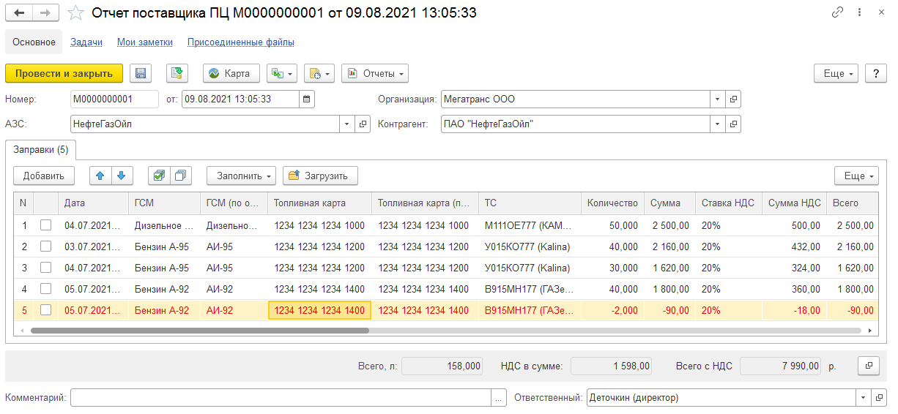

Инструкция по загрузке отчетов поставщиков процессинговых центров
Документ "Отчет поставщика процессингового центра" используется для сверки данных, получаемых от поставщиков (АЗС) и данных, получаемых от водителей. Информация в этот документ может загружаться специальными обработками, которые настраиваются для каждой автозаправочной станции в справочнике "АЗС".
Загрузка данных выполняется в 2 этапа:
- Сначала данные загружаются из файла в документ "Отчет поставщика ПЦ". Для этого предназначена обработка "Универсальная загрузка данных ПЦ".
- На основании данных из документов "Отчет поставщика ПЦ" могут быть сформированы документы "Заправка ГСМ" и "Слив ГСМ" (при наличии заправок с отрицательным количеством). Для этого предназначена обработка "Загрузить заправки ГСМ из отчетов ПЦ ".
Внешняя обработка "Универсальная загрузка данных ПЦ"
Обработка предназначена для загрузки данных процессинговых центров (далее по тексту - ПЦ) из файла в документы "Отчет поставщика ПЦ".
Перед началом работы обработку необходимо прикрепить к элементу справочника "АЗС" или указать, что используется стандартная (встроенная в программу) обработка. Чтобы прикрепить внешнюю обработку "Универсальная загрузка данных ПЦ" к АЗС воспользуйтесь командой "Внешняя обработка" - "Изменить".
В справочнике "АЗС" в табличной части «Соответствие ГСМ» необходимо указать соответствия наименования ГСМ в файле и номенклатуры ГСМ в программе.
Обработка вызывается по кнопке "Загрузить" командной панели табличной части "Заправки" документа "Отчет поставщика ПЦ".
При открытии формы обработки необходимо выбрать файл с данными ПЦ, период загрузки данных и настроить параметры.
Параметры:
- Тип файла данных. Тип файла данных ПЦ, может быть выбран файл MS Excel, xBase, OpenOffice.
- Соответствие колонок. Может устанавливаться:
- По имени. Соответствие колонок устанавливается по имени колонки таблицы файла.
- По номеру. Соответствие колонок устанавливается по порядковому номеру колонки таблицы файла.
- Таблица соответствия колонок. Поле "Колонка документа" содержит имя колонки табличной части документа "Отчет поставщика ПЦ". Поле "Имя / номер колонки файла" - имя/номер колонки таблицы файла, соответствующей колонке документа.
Колонка "Дата" документа "Отчет поставщика ПЦ" содержит дату и время. Файл выгрузки может содержать одну колонку "Дата" с датой и временем, или две отдельные колонки "Дата", "Время". Поэтому для колонок "Дата" и "Время" могут быть указаны одинаковые номера (имена) колонок в файле.
Внимание! При загрузке данных файл не должен быть открыт для редактирования в других приложениях.

При нажатии кнопки "Выполнить загрузку" в документ "Отчет поставщика ПЦ" будут подставлены данные из файла. Колонки "ГСМ", "Топливная карта", "ТС" будут подставлены автоматически, если наименование в файле соответствует наименованию номенклатуры, топливной карты, транспортного средства. Колонку "ТС" можно заполнить либо вручную, либо по кнопке "Заполнить" командной панели табличной части "Заправки" документа "Отчет поставщика ПЦ".
Обработка "Загрузить заправки ГСМ из отчетов ПЦ"
Форма обработки содержит настройки:
- Глубина поиска путевых листов:
- До выезда, часов - Глубина поиска путевых листов до выезда (в часах).
- После возвращения, часов - Глубина поиска путевых листов после возвращения (в часах).
- Только проверенные заправки ГСМ - Если данный флаг установлен, это означает, что из документов "Отчет поставщика ПЦ" будут загружаться только строки с установленным флажком "Проверено".
- Обрабатывать рассчитанные путевые листы - Если данный флаг установлен, то при формировании для каждой заправки будет выполняться поиск путевого листа по автомобилю и дате заправки. В случае нахождения такого путевого листа, заправка будет в него добавлена. Если флаг не установлен будет выполняться поиск только не рассчитанных путевых листов.
- Пересчитать расход ГСМ по путевым листам - Если данный флаг установлен путевой лист будет пересчитан.
- Проводить созданные заправки и сливы ГСМ - Если данный флаг установлен, то сформированные заправки и сливы проводятся, иначе записываются.
- Открывать формы записанных заправок и сливов ГСМ - Если данный флаг установлен, то открываются сформированные документы.
- Создавать сливы ГСМ для отрицательных заправок - Если данный флаг установлен, тогда формируются сливы.
- Комментировать ход выполнения - Если данный флаг установлен, то пользователю сообщается о сформированных документах.
Глубина в часах прибавляется к границам путевого листа при поиске соответственно до даты выезда и после даты возвращения. По умолчанию интервал поиска совпадает с периодом между выездом и возвращением путевого листа.
При открытии формы обработки необходимо выбрать период формирования, организацию и АЗС. Затем включить флажки для тех видов ГСМ, по которым требуется выполнить загрузку и нажать кнопку "Выполнить". При успешном завершении выполнения обработки на закладке "Обработанные документы" отобразятся созданные и обработанные документы.